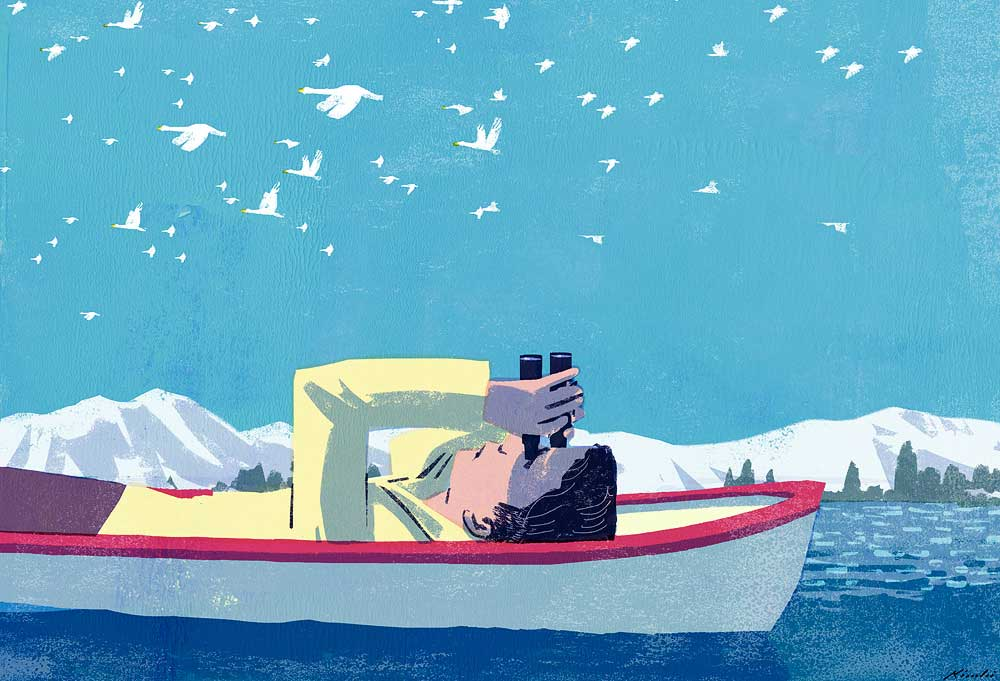

Tatsuro Kiuchi
Tatsuro Kiuchi was born in Tokyo, Japan in 1966. Originally a graduate in Biology at International Christian University in Tokyo, He made the change to an art career after graduating with distinction from the Art Center College of Design in Pasadena, California.
He started illustrating mostly children’s books with several publishers in the US and Japan and eventually branched out into editorial work in magazines and the illustration of book jackets and advertising commissions.
His first picture book “The Lotus Seed” (text by Sherry Garland / Houghton Mifflin Harcourt) has sold more than 250,000 copies worldwide, and has been commissioned by such clients as Royal Mail to do Christmas Stamp Collection in 2006, and Starbucks for Worldwide Holiday Promotion “Pass the Cheer” in 2007.
-
Communication Arts 52 Illustration Annual
2011 -
Gold Medal, Institutional Category, Society of Illustrators 53rd Annual Exhibition
Week Award, Editorial+Print Category, Design Week, UK
American Illustration 29 Annual
Communication Arts 51 Illustration Annual2010 -
Silver Medal, Book Category, Society of Illustrators 52nd Annual Exhibition
American Illustration 28 Annual
Communication Arts 50 Illustration Annual2009 -
American Illustration 27 Annual
Two Bronze Medals, 3×3 ProShow 2008
Communication Arts 49 Illustration Annual2008 -
Communication Arts 48 Illustration Annual
American Illustration 26 Annual
3×3 Illustration Annual No. 42007 -
Society of Illustrators 48th Annual Exhibition
American Illustration 25 Annual2006 -
Award for Illustration from Kodansha Publishing
American Illustration 24 Annual
3×3 Illustration Annual No. 22005 -
New York Society of Illustrators 46th Annual Exhibition
American Illustration 23 Annual2004 -
Society of Illustrators 45th Annual Exhibition
2003 -
Bronze Medal from the Tokyo Illustrators Society
2001 -
Society of Illustrators 42nd Annual Exhibition
Art Directors Club Annual2000 -
Communication Arts 36 Illustration Annual
1995 -
Bologna International Children’s Book Art Annual
Communication Arts 35 Illustration Annual1994 -
Bronze Medal, Society of Illustrators of Los Angeles West 30
1993 -
Bronze Medal, Society of Illustrators of Los Angeles West 30
1991
-
Tokyo Illustrators Society
2002 -
Society of Illustrators
2010
-

What Do the Birders Know? | The New York Times Sunday Review OPINION
The New York Times -
The New Yorker
-
Catalogue Cover
The Folio Society -
Express Fall Arts Guide
Washington Post -
Illustrations for Last Night by James Salter
The Guardian -
Bloomberg Businessweek
Tatsuro Kiuchi currently lives and works in Tokyo, Japan.
His illustration works can be found at a separate site.